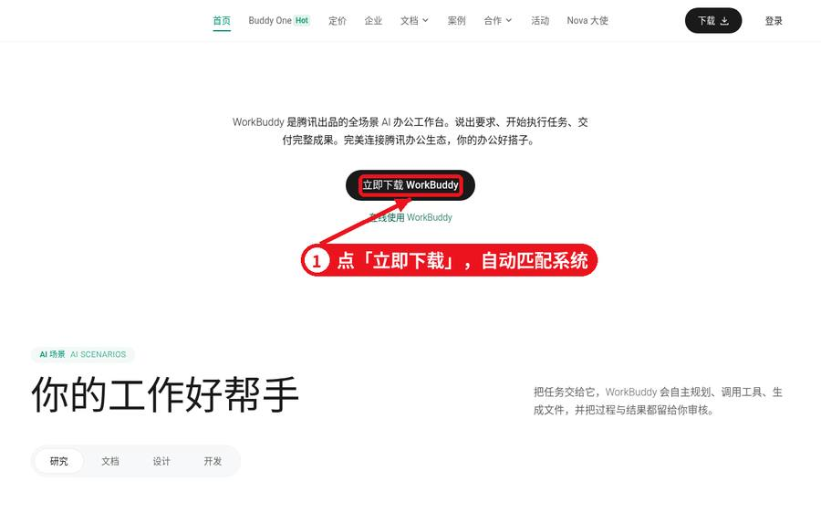
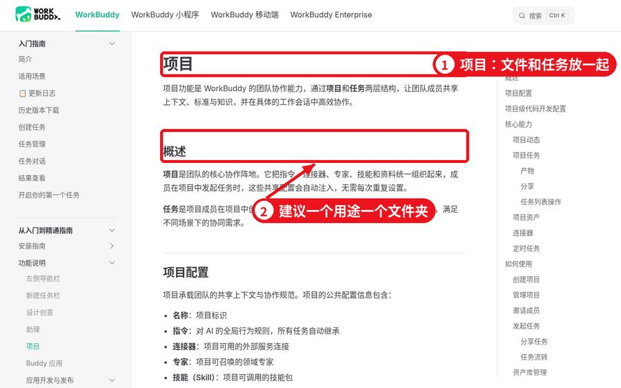
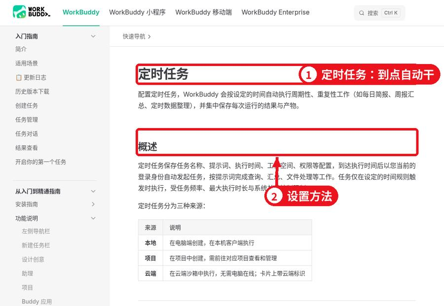

下班别闲着｜WorkBuddy
生活杂事 100 个用法
阿胜的小栈 · 原创整理 · 2026-11-09 · 复制指令即可试
WorkBuddy 是腾讯出的电脑端助手：你用大白话交代任务，它就在你授权的文件夹里整理文件、做表、出文档。上班能用，下班的杂事——找发票、给孩子出卷、整理相册、排行程——往往更解气。这篇不讲安装长课，只留动手前三件事，然后给你 10 类、约 100 条可复制指令。
动手前三件事
1. 装好并跑通一句大白话
电脑打开官网 workbuddy.cn，点「立即下载」，按系统装好。登录后先试一句：「把桌面上的截图按日期分类」。官方「第一个任务」也可以照着走一遍。

官网首页：点立即下载
 先跑通第一个小任务
先跑通第一个小任务
2. 只授权一个专用文件夹
在非系统盘建个目录，比如「生活工作区」。要处理的材料先复制进去，只授权这一个文件夹。别把整个 C 盘或桌面交出去——它会真的改文件，不是陪聊。

工作空间：授权文件夹即干活范围
3. 权限先保持默认
默认模式下，删除、跑命令前它会先问你。刚开始觉得啰嗦，但这一下能挡不少误操作。「完全访问」只在测试文件夹里短时间开。
 默认权限：危险操作先确认
默认权限：危险操作先确认
下面每条都是可直接复制的指令。文件夹名、日期、金额、城市都是举例——换成你自己的再用。重要结果请人工核对。
1. 电脑文件大扫除
建议从这类练手：搞错了也能挪回来，风险最低。
1. 下载目录重新分拣打开「生活工作区/待分拣下载」，把里面的东西按文档、图片、安装程序、压缩包、视频挪到对应子目录。超过 90 天没打开过的安装程序先丢进「疑似可删」，不要直接删，先给我一份清单。
2. 文件名改成能看懂的「扫描件缓存」里一堆叫 DSC_数字 的文件。逐个打开看内容，按「年-月_内容」重命名，例如「2026-03_物业缴费回执」。动手前先输出一张新旧对照表给我确认。
3. 揪出重复副本扫描「生活工作区」里内容完全相同的文件（文件名不同也算），按组列出来，每组写一句该留哪份的理由。
4. 批量 Word → PDF把「荣誉证书」目录下全部 .docx 转成 PDF；原稿保留，PDF 统一放进新建的「导出PDF」目录。
5. 体检 PDF 合成一本「年度体检」里的 PDF，按文件名日期从早到晚合并成「家庭体检合集.pdf」，每一份前面加封面页写明是谁的报告。
6. 从一堆资料里捞电话我记得「租约相关」里某份文件写过物业电话。帮我定位到文件名和页码，把号码连同前后两句一起贴出来。
7. 给资料夹写索引导航通读「家庭档案柜」每个文件，新建「索引导航.md」，按类别写清：文件是什么、大约哪年、有什么用。
8. 换机前做资产盘点分别统计「文档」「桌面」「图片」三个位置的文件数量和总大小，挑出合同、证件照、重要照片必须备份的，单独出一张清单。
9. 说明书照片抽文字「家电说明书拍照」里有十几张图，把文字提出来；每台电器生成一个 Word，遇到表格尽量还原成表格。
10. 业主群长对话提炼下面粘贴的是业主群四百来条聊天。帮我归纳：在吵哪几件事、各方立场、有没有落地结论；没结论的单独标红。
2. 手机相册与截图
相册滑不动的时候，这类指令最解气。
11. 按拍摄月份归档「从手机导过来的照片」大约两千张，按拍摄时间分进「2026-01」这种月文件夹；读不出时间的放「时间未知」，不要瞎猜。
12. 筛掉糊片与连拍废片「周末出游原片」里，把模糊、闭眼、几乎一模一样的连拍挪到「候选删除」；每组连拍只留最清楚的一张。
13. 截图菜谱编成电子书「下厨房截图」里每张图抽出菜名、食材、步骤，汇总成「我家常备菜.docx」，按荤/素/汤分章并加目录。
14. 证件照改底色改尺寸把「近照证件.jpg」做成白底一寸（295×413），人脸居中；再导出一张蓝底二寸备用。
15. 九宫格 + 竖版长图「小区野餐」里挑 9 张拼九宫格，格间留白；另外竖拼一张宽度 1080 的长图。
16. 一年家庭回忆册从「2025全年相册」每月精选 3 张，做成 PDF 相册，一页对应一个月，配一句短说明，封面写「这一年的我们」。
17. 照片压到上传上限内「报名材料原图」全部压到单张不超过 480KB，分辨率尽量不砍，输出到「压缩可上传」，原图不动。
18. 账单截图还原成表「银行流水截图」每张图的表格还原成 Excel，一图一工作表，金额列核对两遍。
19. 批量加拍摄日期水印「旧房改造进度」照片右下角加拍摄日期小字水印，另存到「已加水印」。
20. 把某位亲人的照片挑出来「家庭合影库」里，把有外公的照片复制一份到「外公专题」；拿不准的单独列给我审。
3. 家里的钱和账
账单、发票、保单——一年里最耗神的三样。
21. 本月开销一张表把「本月账单导出」汇总成表，按餐饮、通勤、购物、孩子、人情归类，算各类合计并画饼图。
22. 电子发票抽字段「电子发票夹」里提出开票日、金额、抬头、事由，整理成 Excel，再按月合计。
23. 揪出悄悄续费项看近三个月流水，把固定扣款项目列全，标出我可能早就不需要的会员/订阅。
24. 保单信息一览「保单 PDF」通读，列表写清：被保人、保障内容、保费、下次续费日。
25. 提前还贷怎么划算房贷余额约 76 万、剩余年限 24 年、利率 3.05%，已还 6 年。若一次性提前还 8 万：对比「减月供」与「缩年限」各省多少利息，出对比表。
26. 全年花钱复盘把 12 个月开销表拼起来：钱主要去哪了、哪几个月超支、明年最该砍的三项是什么。
27. 水电燃气用量曲线「公共事业账单」抽出每月用量和金额，画折线，标出突然飙高的月份。
28. 群接龙变成订单表下面是小区群接龙原文，整理成表：姓名、楼栋门牌、商品、数量、金额，最后给总价。
29. 人情礼金台账「礼金备忘」的照片与文字整理成表：对方、事由、金额、年份，方便以后回礼对照。
30. 差旅报销打包「出差待报销」里的发票和行程单按日期排序，合并成一个 PDF，首页放汇总表。
4. 孩子上学那些事
家长群通知、默写、错题——放学后也能让它帮一把。
31. 单元默写卷按四年级上册第三单元生字，出一张默写卷，留田字格，另附答案页。
32. 错题照片变错题本「错题拍照」里的题目提出来，按知识点归类，每题下留空白演算区，导出可打印 Word。
33. 口算卷连打五页出 5 页「20 以内加减混合」口算，每页 40 道，附答案，A4 直接打印。
34. 课程表美化打印把下面这张课程表做成彩色 A4，每科一个色块，字放大方便贴墙。
35. 家长群本周待办下面是本周家长群消息，把要交材料、要签字、截止日期整理成清单。
36. 作文好句摘抄本「作文存档」按写人/写事/写景分类，挑出写得好的句子做成摘抄本。
37. 单元单词闪卡本单元 28 个单词做成可裁剪闪卡：正面英文，背面中文+例句。
38. 兴趣班性价比表这几家兴趣班的学费、课时、路程整理成对比表，算出单节课单价。
39. 寒假一日作息给 10 岁孩子做寒假作息表，学习、运动、玩耍都排上，做成可打印版。
40. 分级课外书清单按三年级阅读水平推荐 15 本课外书，各写一句理由，做成可勾选清单。
5. 帮爸妈的忙
大字版、防骗卡、复诊表——做给爸妈看的，要清楚。
41. 药盒说明放大到一页「药盒拍照」里每种药抽出用法用量和注意点，做成大字一页纸，方便贴药箱。
42. 体检异常指标白话版把妈妈这份体检里超标项列出来，用大白话解释大概什么意思、建议挂哪科。仅供参考，不代替医生。
43. 通讯录放大打印「家里人电话簿.xlsx」调成 A4 一页，字号放到老人能看清，导出 PDF。
44. 视频通话步骤卡给爸爸写「怎么用手机视频通话」步骤卡：一步一句、字大、能打印。
45. 防骗一页通整理最近常见的冒充公检法、冒充客服、熟人转账骗局，每种一句话怎么识破，做成一页提醒卡。
46. 复诊与拿药日程把爸妈复诊、取药时间排成表，按日期排序，提前两天的用醒目标记。
47. 老照片粗分年代「扫描老照片」按大致年代分组，文件名写上能认出的人和地点；认不出的留空。
48. 退休手续材料清单按常见本地流程，列办理退休一般要备哪些材料，做成可勾选清单，并提醒以窗口现场要求为准。
49. 家电保修倒计时「家电购物发票」抽出购买日和保修期，算出哪些快过保。
50. 节日礼物预算方案爸妈生日 + 春节礼物总预算 1800，给 3 套方案，每套写清买什么和大概价位。
6. 出门玩
行程、行李、比价、游记——出发前把琐事丢给它。
51. 轻松三天游行程五一带爸妈去苏州 3 天，老人不宜多走。每天最多 2 个点，标休息处和吃饭建议。
52. 全家行李勾选单按 3 口人、4 天海岛行，列行李清单：证件、衣物、药品、数码，全部可勾选。
53. 三家酒店对比下面三家酒店的房价、位置、早餐情况做成对比表，按「带娃方便」排序。
54. 旅途开销清算把这次旅行花费截图整理成表，算总花费和人均；若 AA，写出每人应付。
55. 按片写游记草稿根据「旅途照片」的时间地点，按天写游记初稿，我回头再改。
56. 自驾停靠建议从合肥自驾去千岛湖，列出可停服务区与大致耗时，提醒易堵路段。
57. 出行票据归档车票、门票、住宿单据按日期排好，合成一个 PDF 备查。
58. 景点亲子讲解卡我们要去南京博物院，给孩子写一份约 8 分钟能讲完的讲解卡，用小学生能听懂的话。
59. 目的地穿衣建议下下周去昆明 5 天，按当地往年同期天气，给全家列穿衣建议。
60. 旅途精选相册从旅途照片挑 24 张做成 PDF 相册，每页配一句短文案。
7. 找工作换工作
简历、对比 offer、面试题——跳槽季也能复用。
61. 按 JD 改简历表述对照这份岗位要求，把简历经历改得更贴合；只改措辞，不许编造经历。
62. 三份 offer 横向比下面三份 offer 的薪资、通勤、福利整理成表，估算每月到手大概数。
63. 可能被问的 12 题按岗位描述列 12 个高频面试题，每题给一段回答提纲。
64. 自我介绍双版本写 60 秒版和 3 分钟版自我介绍，口语一点、别太书面。
65. 投递进度追踪表做一张投递表：公司、岗位、投递日、当前进度、下一步动作。
66. 离职交接清单按我现在的工作内容列交接单：账号、关键文件、进行中事项、对接人。
67. 作品集十件套「作品存档」挑出最好的 10 件，合成 PDF 作品集，每件配一段说明。
68. 谈薪要点一页纸整理谈薪可讲的理由和底线，压到一页以内。
69. 行业入门速览写一份目标行业入门：主要公司类型、常见岗位、基本技能要求。
70. 感谢面试英文信写一封礼貌的英文邮件：感谢面试并询问后续进度。
8. 想学点东西
计划、笔记、闪卡、复盘——把碎片时间变成进度。
71. 三个月 Excel 学习表我想用 12 周学会常用 Excel 函数，每天约 25 分钟，帮我排按周计划。
72. 长文压成一页笔记把「待读长文」这篇压成一页笔记，要点不超过 8 条。
73. 字幕文件变课程讲义「网课字幕」整理成讲义，按章节加小标题。
74. 收藏单词去重成表把我近期收藏的英文词去重，补音标、中文、例句，做成表格。
75. 读书笔记空模板做读书笔记模板：书名、作者、三个收获、一句金句、能用到哪。
76. 考前 45 天排期距考试还有 45 天，按这份大纲把内容均分到每天，写清每日学什么。
77. 章节问答闪卡把本章内容做成 16 张问答卡：正面问题、背面答案。
78. 学习资料重新归档「学习资料堆」按科目和难度建文件夹并归类。
79. 根据笔记出选择题根据这份笔记出 15 道选择题，附答案和简短解析。
80. 本周学习复盘根据我这周学习记录写复盘：完成了什么、拖了什么、下周怎么调。
9. 搞点小副业（合规）
只帮你省时间整理；赚不赚钱看手艺和坚持，别信暴富话术。
81. 手作商品文案三版根据这几张手作小物照片，写 3 版商品描述，突出材质和尺寸，禁止夸大功效。
82. 客户常见问法汇总把近一个月客户问过的问题整理成 FAQ，方便以后直接回复。
83. 订单销量与利润「店铺订单导出」按商品汇总，算出销量前 5 和各自大概利润。
84. 家常菜账号选题 24 条我做家常菜分享，列 24 个选题，按季节和节日排好。
85. 手机可读的图文结构把这篇文字改成适合手机阅读的结构，每段加一句小标题。
86. 服务报价单 PDF按我给出的服务项目和价格，做一份清晰报价单 PDF。
87. 合作协议关键条款白话帮我看这份合作协议里付款、违约、交付期限条款，用大白话说明。重要合同请再找专业人士。
88. 素材库重命名归档「内容素材」按主题分类并改名，方便日后检索。
89. 单笔订单成本拆解按原料、包装、快递、耗时估算每单成本，对照现价看利润空间。
90. 给自己的一周小结根据本周订单和开支，写一页小生意周报。
10. 让它定时盯着
设好时间点，到点它自己干，结果推到你手机。
91. 起床天气简报每个工作日 6:50 查本地天气，提醒带不带伞、孩子穿几件。
92. 周日清空下载目录每周日 21:00 把「下载」按类型整理一遍，发我一份变更清单。
93. 月初账单月报每月 1 日把上月账单汇总成表发给我。
94. 月底续费雷达每月 28 日检查保单和会员到期表，下月到期的提前提醒。
95. 周五汇总学校通知每周五 17:30 汇总本周家长群提到的作业和要交材料。
96. 周末增量备份每周六把「重要资料」复制到移动硬盘备份目录，汇报备份了多少个文件。
97. 心愿单降价盯梢每天扫一次我关注的几件商品页价格，降到我设的阈值就提醒。
98. 睡前阅读打卡每天 22:00 问我今天读了几页，记进阅读表，周日汇总。
99. 周一家庭日程看板每周一早上把本周家里日程（复诊、生日、缴费）整理好发我。
100. 跨年家庭年度小结每年 12 月 30 日，把这一年账单要点、照片数量、阅读记录汇总成家庭年度小结。

定时任务：设好时间点自动执行
写指令的 4 个小窍门
- 说清范围：哪个文件夹、哪些文件。
- 说清结果：要表、Word 还是 PDF，放哪、叫什么。
- 先预览再动手：改名、删除类，先让它列清单。
- 原件另存：尽量让它另存一份，原稿保留。
 指令越具体，结果越稳
指令越具体，结果越稳
涉及钱、身体、合同的内容，它给的只是整理与参考，最终决定请找专业人士。证件和珍贵照片请你自己另做备份。跑完后抽查几条结果，别全盘盲信。
本文为阿胜的小栈原创整理，截图来自官方公开页面，仅作使用说明。功能以官方最新版为准。闲鱼店铺「好一个少年」· 虚拟教程自动发货。